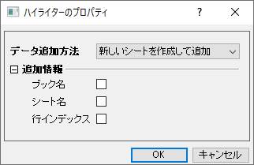

レイヤ内に複数のプロットがある2D折れ線／シンボル／棒グラフの場合、グラフウィンドウまたはオブジェクトマネージャ内のプロットをクリックすると、レイヤ内の他のプロットが同時にグレーアウトされ、ワークシート内のソースデータがハイライト（選択）されます。プロットを選択するときにワークシートデータを強調表示したくない場合は、LabTalkシステム変数@PS = 0を設定してください。こちらを参照してください。FAQ-708 ＠システム変数の値を永続的に変更するには？
データハイライターツール（プロット操作・オブジェクト作成ツールバー）を使用して、ワークシートのデータから作成した2Dグラフや3D散布図/棒グラフのプロットされたデータポイントを選択すると、元のワークシートの対応するデータ行を同時に強調表示できます。また、 ワークシート内のデータの行を選択すると、そのデータプロット内の対応する点を強調表示することができます。
レイヤ内に複数のプロットがある2D折れ線／シンボル／棒グラフの場合、グラフウィンドウまたはオブジェクトマネージャ内のプロットをクリックすると、レイヤ内の他のプロットが同時にグレーアウトされ、ワークシート内のソースデータがハイライト（選択）されます。プロットを選択するときにワークシートデータを強調表示したくない場合は、LabTalkシステム変数@PS = 0を設定してください。こちらを参照してください。FAQ-708 ＠システム変数の値を永続的に変更するには？ |
データポイントやワークシート行を選択すると、グラフウィンドウもしくはワークブックウィンドウの右上に、データハイライターミニツールバーがポップアップします。

このツールバーを使用すると、ポイントのコピー、ポイントの削除、ポイントのマスクまたはマスク解除、を簡単に行うことができます。
サブセットシートを作成ボタン をクリックして選択した行/ポイントをコピーし新しいシートに分割します。
をクリックして選択した行/ポイントをコピーし新しいシートに分割します。
カテゴリを作成ボタンをクリックして、カテゴリー値作成ダイアログを開きます。
このダイアログはクラスターガジェットダイアログと似ており、強調表示された行/ポイントのカテゴリを作成するために使用できます。ダイアログを再度開くか、ダイアログを開かずにホットキー「C」を直接押すことで、カテゴリを繰り返し作成できます。
ポイントを削除ボタン をクリックして選択したデータポイントもしくはワークシート行を削除します。
をクリックして選択したデータポイントもしくはワークシート行を削除します。
選択したポイントのマスク/マスク解除ボタンをクリックして選択したポイント/行のマスク/マスク解除を行います。また、選択不可ポイントのマスク/マスク解除ボタンを使ってほかの選択されていない選択不可ポイントもマスクすることができます。
プロパティダイアログを開くボタンをクリックしてハイライターのプロパティダイアログを開きます。

データ追加方法：選択されたデータポイントのコピー方法を設定します
追加情報：選択したポイントのコピーでデータ情報を含めるかどうかを設定します。
データハイライターミニツールバーのないOrigin2022より前のバージョンでは以下の手順に従って操作を行うことができます。
選択されたワークシートのデータ行は、データハイライターモードを終了しても選択されたままとなります（ESCキーを押すか、ポインタツール をクリックしてください）。これにより、データをさらに操作することができます。次のアクションがサポートされています。
をクリックしてください）。これにより、データをさらに操作することができます。次のアクションがサポートされています。
wcopy -d